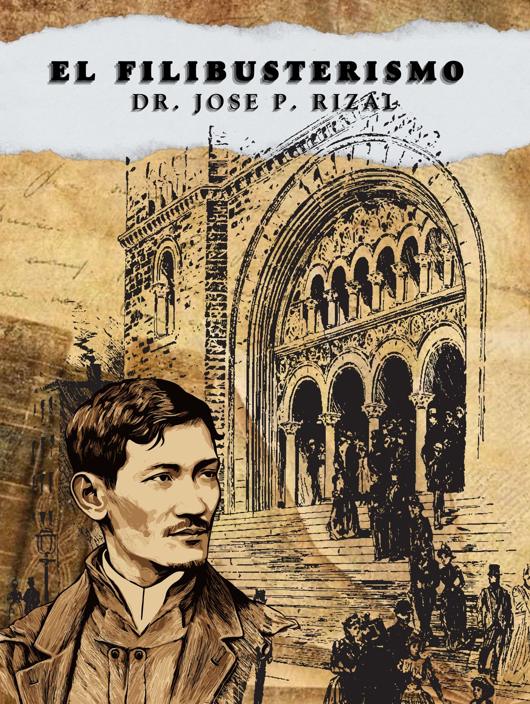

September 18, 1891
Published in Ghent, Belgium, José Rizal’s *El Filibusterismo* is a powerful novel that delves deeper into the struggle for reform and revolution in the Philippines, highlighting the injustices and corruption of Spanish rule.

Simoun is a wealthy jeweler and a close adviser to the captain-general. Though feared for his cruelty, the elite seek his favor, unaware that he is actually Crisóstomo Ibarra in disguise. Having faked his death and spent years in exile, he returns with a hidden agenda: to seek revenge and ignite a revolution.
Using his influence, Simoun fuels both oppression and resistance, pushing the country toward rebellion. Though he longs to rescue María Clara, his plans are ruthless, believing that only through bloodshed can the Philippines be reborn.
A passionate student and poet, Isagani fights for education reform and national pride. As Father Florentino’s nephew, he believes in open advocacy, even when secrecy might be safer. His engagement to Paulita Gómez ends due to their differing values, leaving him heartbroken but resolute.
Though betrayed, Isagani's noble character prevails—he risks his life to stop a deadly bombing at Paulita’s wedding, saving oppressors he despises. After his release from prison, he chooses a quiet life in the countryside, disillusioned but steadfast in his ideals.
Basilio, a determined medical student, overcame childhood tragedy to pursue a future of healing. Supported by Captain Tiago, he dreams of marrying Julí and serving the poor as a doctor. Though aware of colonial oppression, he initially believes education—not revolution—is the key to change.
After his wrongful imprisonment and Julí’s tragic death, Basilio loses faith in justice and finally joins Simoun’s cause for revenge. Yet, his conscience prevails—by warning Isagani of a bomb, he unintentionally foils Simoun’s plan, proving that even in despair, his heart remains noble.

A self-important Manila journalist, Ben Zayb believes himself a fearless writer, though he never truly challenges colonial rule. Instead, he flatters the authorities, crafting grand tributes to leaders like the captain-general.
Despite his inflated ego, Ben Zayb often fails to impress. His attempt to expose the illusion behind Mister Leeds’s talking head ends in public embarrassment, proving that his confidence outweighs his abilities.
A politically cautious priest, Father Irene avoids taking firm stances, especially on controversial issues like the Spanish-language academy. Though he enables Captain Tiago’s opium addiction, he later ensures Basilio’s inheritance—a rare act of kindness.
Despite his position, Irene’s behavior is often unseemly. He embarrasses himself at the operetta by fawning over dancers, revealing his hypocrisy as both a religious leader and a supposed moral authority.
A wealthy mestiza obsessed with European refinement, Doña Victorina looks down on Filipino culture while desperately trying to appear Spanish. Her unhappy marriage to Don Tiburcio ends when he flees, leaving her to embrace independence.
Despite her arrogance, Victorina is constantly scheming to secure a higher social standing. She even attempts to marry Juanito Peláez, only to be thwarted when he becomes engaged to her own niece, Paulita Gómez.
A charming and beautiful socialite, Paulita Gómez values wealth and status over ideals. Though once engaged to Isagani, she rejects his nationalist dreams, preferring the European sophistication of Manila’s elite.
Quick to abandon Isagani after his arrest, Paulita marries Juanito Peláez—choosing fortune and social security over love and principles.
A young priest in charge of San Diego, Father Camorra is known for his recklessness and predatory behavior. His inappropriate advances, especially toward Julí, ultimately lead to her tragic death.
Camorra’s actions are covered up rather than punished—he is merely transferred to another post, exposing the hypocrisy and corruption of the colonial church.
A powerful but tormented priest, Father Salví played a key role in Ibarra’s downfall. Though he appears composed, his guilt resurfaces when Mister Leeds’s eerie talking head and Ibarra’s handwritten message send him into a panic.
Haunted by his past betrayals, Salví’s reaction reveals the cracks in his carefully maintained façade of authority.

The devoted daughter of Cabesang Tales and fiancée of Basilio, Julí sacrifices her freedom to help her family, selling herself into servitude to pay her father’s ransom.
When Basilio is arrested, she desperately seeks help from Father Camorra, only to fall victim to his abuse. In a tragic end, Julí dies either in an escape attempt or by suicide, highlighting the cruelty of colonial society.
Once a hardworking farmer, Cabesang Tales fought to provide for his family, only to have his land unjustly seized by the friars. His pursuit of justice through legal means failed, forcing him to take up arms as a rebel leader.
Tragedy follows him as his family suffers—his daughter Julí sells herself into servitude to free him, and his father is murdered. Transformed by loss, Cabesang Tales becomes a feared outlaw, dedicated to avenging the oppression of the poor.
A retired priest and Isagani’s uncle, Father Florentino represents the idealistic clergy—those who reject corruption and stand for true faith. He withdrew from church politics, choosing instead to live a quiet life by the sea.
Though he condemns violence, he understands the pain of the oppressed. In the end, he witnesses Simoun’s downfall and disposes of his treasure in the ocean, symbolizing the need for genuine, righteous change rather than vengeance.